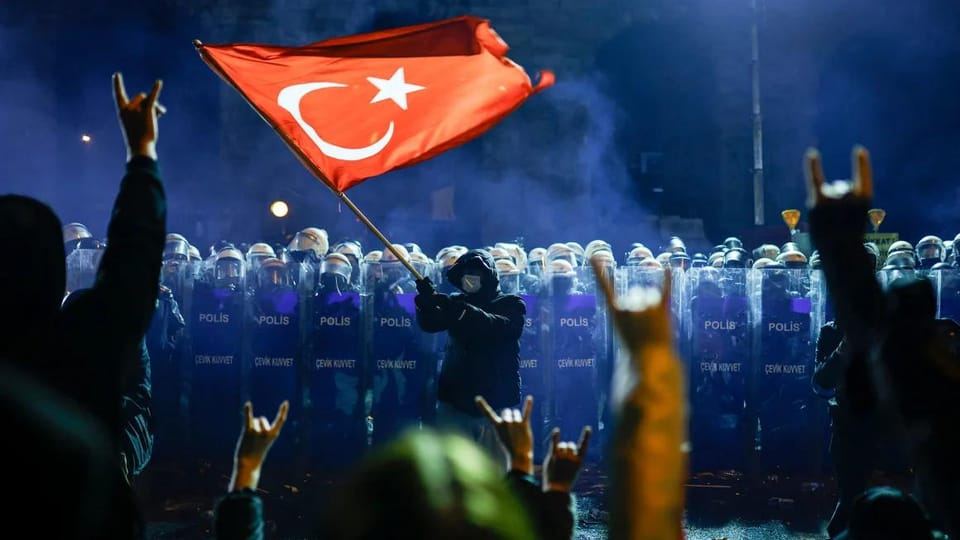

世界苦茶03月24日新闻 | 37条 | 香港基本法23条一周年

香港基本法23条一周年 | 加拿大将于四月底大选 | 土耳其示威活动蔓延至全国 | 捷克加入乌克兰维和部队计划
透明茶室
苦茶数据
美元兑人民币：7.26（昨日7.25，前日7.25）
美元兑日元：149.76（昨日149.33，前日149.05）
上证指数：3369（昨日3364，前日3408）
标普500指数：休市（昨日5667，前日5662）
比特币：85793（昨日84302，前日84314）
布伦特原油：71.92（昨日72.16，前日72.25）
中国新闻
• 港公务员被强调护国安 ：香港公务员事务局局长杨何蓓茵在社交平台上发文说，维护国家安全，人人有责，公务员更是责无旁贷。杨何蓓茵星期天在脸书发文，称未来三个月，有多个与国家安全有关的重要日子，一是《维护国家安全条例》（简称《条例》）今刊宪生效一周年，二是今年4月15日将迎来第十个全民国家安全教育日，三是《香港国安法》于6月30日生效五周年。杨何蓓茵接着表示，维护国家安全，人人有责，公务员更是责无旁贷。她进一步说，经更新后的香港《公务员守则》清楚说明，在“一国两制”下，公务员作为行政机关的一员，在执行职能时需将国家安全放在首位。
• 福耀大学首招百人 ：中国福建新设立的福耀科技大学披露了更多首届招生信息，称计划招收100名以内学生，并采取本硕博贯通培养模式。据微信公号“福州晚报”星期天报道，人工智能时代拔尖创新人才培养座谈会上星期五在福耀科技大学举办。今年，福耀科技大学计划招收100名以内学生，采取本硕博贯通培养模式，与数十家国外及港澳台著名大学合作教学，学生将获得福耀科技大学及其他著名大学的双学位。报道称，学生在大一、大二将在文理学院接受公共通识课教育，大二下学期可以选择计算机科学与技术、智能制造工程、车辆工程、材料科学与工程等四个专业。
• 李强称中国应对外部冲击 ：面对美国特朗普政府的贸易关税大棒，中国总理李强说，中国为可能出现的外部“超预期冲击”做了准备，必要时还将推出新的增量政策，确保中国经济能够平稳运行。李强星期天在中国发展高层论坛开幕式上说，中国欢迎更多外资企业投资中国，在制造业外资准入限制措施清零的基础上，将进一步扩大金融、互联网、电信医疗、教育等领域的开放。李强也呼吁广大企业家齐心协力，抵制单边主义和保护主义。他说，不稳定和不确定性正在增加，当前各国进一步开放市场、所有企业进一步共享资源更为重要。
• 港保安局称23条最难读 ：香港就《基本法》23条立法至今届满一周年，香港保安局局长邓炳强形容23条立法“难读之中最难读的一个篇章”，而面对复杂多变的国际形势，他也促香港不能掉以轻心，要以居安思危意识及守正创新的思维，以高水平安全保障高质量发展，推动香港全面发展。综合《星岛日报》和香港电台网站报道，邓炳强星期六出席香港政党民建联新书《23演义》发布记者会致辞表示，有人形容香港为一本很难读的书，他认为23条立法“难读之中最难读的一个篇章”，因要对“一国两制”的宪制秩序有深刻认识和理解，要对回归以来外部势力的横加干预，及对香港内部政治乱象有切肤之痛的人，才能够深深感受23条立法所带来的意义。
• 解放军介绍气象兵职责 ：中国军方在世界气象日前夕通过社交平台介绍气象兵，并说气象兵365天、24小时监测从未中断。中国人民解放军东部战区星期六在微信公众号发文称，气象兵精准研判、严谨预测，“与天地对话、捕捉瞬息风云。各类气象数据在他们手中汇聚，纷繁复杂的气象符号通过排列组合，标绘出天气变化的态势图，化作解析风云变幻的‘胜战密码’”。东部战区写道，每一次探空气球的升空，都是气象战场上吹响的号角。“气象划破苍穹直插寰宇，大气数据被传回地面，处理、整合、分析。”“实时监测、时刻关注，洞悉回波于千里之外，精准判别雨雪风霜。他们是感知风云变化的‘千里眼’和‘顺风耳’，为气象预报提供立体数据支撑。”
• 中方称将继续优化营商环境 ：中国商务部部长王文涛星期六形容妥善解决欧盟对华电动汽车反补贴案具有重要意义，并强调中国将持续优化营商环境，这是对包括宝马集团在内的外资企业的承诺。中国商务部在官网公布，王文涛当天会见宝马集团董事长齐普策，双方就宝马集团对华合作、欧盟对华电动汽车反补贴案等议题进行交流。王文涛说，中国的市场是开放的，政策是确定的，中国政府将坚定不移扩大高水平对外开放，持续优化营商环境，这是对包括宝马集团在内的外资企业的承诺。
亚太印太新闻
• 韩国山火多地进入灾难状态 ：韩国多地3月22日接连发生大规模山火，造成4名灭火人员死亡，6人受伤，700多人紧急避险。截至22日22时，全国多地共发生30起山火，其中6起山火仍未扑灭。山林厅上调针对忠清南道、全罗道、庆尚道的国家森林火灾危机预警级别至最高级“严重”级别，政府宣布庆尚南道、庆尚北道、蔚山市进入“灾难状态”。
• 乐乐法利被禁入台因曾非法打工 ：美国一名据称申请到台湾就业金卡的网红，因曾在台湾非法打工，被禁止入境台湾一段时间。综合台湾《联合报》和ETtoday新闻云报道，这名网红乐乐法利星期六发布影片称，自己申请到台湾的就业金卡，3月11日从洛杉矶飞台湾，打算正式搬到台湾生活，孰料在机场扫描护照后，被告知禁止入境。乐乐法利在以“我被台湾禁止入境”为题的影片中，谈到自己一直向往来到台湾，申请到就业金卡后，立即打包好行李、卖掉汽车和拍摄设备，并退租公寓，向亲友告知自己要去到台湾开启新旅程，不料出境时却被拒绝入境台湾，“那一刻，我的梦碎了”。
• 韩国宪法法院3月24日驳回国务总理韩德洙弹劾案，韩德洙随即重返代总统职位： 宪法法院8名法官中5人提出驳回意见，1人提出弹劾案成立的意见，另2人则提出不予受理的意见。提出驳回意见的5名法官中有4人认为，韩德洙对国会选出的三名宪院法官候选人未予任命违反宪法和相关法律规定，但无法断定此举属于失信于民的行为，故无法认定存在将罢免正当化的事由。
科技新闻
• TikTok面临最后谈判机会 ：TikTok不卖就禁的宽限期将于4月5日到期，据知美国白宫正在主导一项谈判计划，要让TikTok母公司字节跳动最大的非中国投资者，增持TikTok美国业务的股份，并收购这部分分拆出来的业务。路透社引述两名知情人士报道，这项计划涉及为TikTok分拆出一个美国实体，并将中国在新实体中的所有权降至美国法律要求的20%门槛以下，从而使TikTok免于面临美国禁令。报道指，字节跳动的美国投资者，包括全球金融服务公司Susquehanna International Group、泛大西洋投资集团，以及美国私募股权基金KKR正在与白宫磋商。
• 新凯来将亮相半导体展 ：与中国科技巨头华为关系密切的中国半导体设备制造商——新凯来下周将在上海举行的中国国际半导体展首次亮相。香港《南华早报》星期五报道，这家企业的崛起引发了外界对中国减少对美国晶片制造技术依赖的期待。获得深圳政府支持的新凯来成立于2021年，正值华为受到美国科技制裁之际。公司一向低调，官网只列出了四款低技术门槛的晶片设备与产品。
• 腾讯混元T1性能领先 ：中国科技巨头腾讯推出自研人工智能模型混元T1，性能比肩深度求索模型，但价格更便宜，反映中国AI竞争日益激烈。腾讯混元星期五在微信公众号说，混元T1是腾讯自研的强推理模型，特点是吐字快、能秒回，擅长超长文处理，且摘要幻觉低。腾讯介绍，混元T1的吐字速度是每秒60至80 tokens，远快于DeepSeek-R1模型。由于R1在生成答案前，需进行深度思考，并列出思维链，因此存在回应速度慢的短板。
• 意大利国防部长确认与星链谈判已停滞： 意大利国防部长圭多·克罗塞托最新透露，意大利政府在军事和政府应用中部署星链的谈判已经被叫停。周六，克罗塞托在接受意大利媒体采访时说道，“在我看来，一切都暂停了。因为讨论的重点已经从星链项目转移到了‘个人言论’上。”这里的“个人言论”指的就是SpaceX创始人埃隆·马斯克的政治立场，克罗塞托称，围绕马斯克的争议已经“盖过了”技术细节。“我们当前已经不谈论技术细节了。只有到争议平息后，谈判才会重新回到技术层面。”克罗塞托补充称，“重点依然是：什么对国家是最有用的、最安全的。”年初时有报道称，意大利政府已与SpaceX就一项为期五年、价值15亿欧元的交易进行深度谈判。
财经新闻
• 万达80亿股权被冻结 ：中国最大商业地产开发商万达集团所持股权再被冻结，高达80亿元人民币。中国企业信息查询系统“天眼查”显示，大连万达集团持有的北京万达文化产业集团80亿元权被全部冻结。冻结期限为2025年3月18日至2028年3月17日，执行法院为河南省郑州市中级人民法院。综合中国基金报和每日经济新闻报道，北京万达文化产业集团成立于2012年9月，注册资本为80亿元，大连万达集团对其持股比例为100%，这意味着，此次法院将其持有的全部股权进行了冻结。
• 中国驻美大使批美关税政策 ：中国驻美国大使谢锋强调，认清互利共赢是中美关系的本质特征，并告诫美国，将关税武器化如同回旋镖、终将反噬自身。据中国驻美使馆官网发布的致辞稿，谢锋星期六）应邀以视频方式，在吉米•卡特中美关系对话会发表致辞说，中美合作从来不是你输我赢的零和游戏，美国对华出口、中企赴美投资分别拉动约100万个就业岗位，41%在华美企将中国视为全球第二大营收来源，46%表示有望实现盈利或大幅盈利。
• 面对经济不确定性，多位美联储决策者支持谨慎的政策方针 ：纽约联储总裁威廉姆斯表示，考虑到经济在前景高度不确定环境下的表现，美联储目前的货币政策恰到好处，并指出无需急于调整利率。“鉴于劳动力市场稳健，通胀率仍略高于我们2%的目标，当前适度限制性的货币政策立场完全合适。”他还称，现在判断特朗普政府关税对通胀的影响还为时过早。芝加哥联储总裁古尔斯比对CNBC表示，由于不确定性，美联储将在情况更明朗之前保持观望。
• 中国副总理何立峰会见苹果、辉瑞等跨国公司负责人，称欢迎扩大对华投资 ：中国国务院副总理何立峰周日会见苹果、辉瑞、博枫、美敦力、万事达卡、礼来制药、嘉吉、康宁等跨国公司负责人，就全球和中国经济形势、中美经贸合作、扩大对华投资等交换意见。新华社报道并援引他的话称，中国坚定不移推动高质量发展，扩大高水平对外开放，持续优化营商环境，欢迎跨国公司扩大在华投资，共享发展机遇。何立峰在北京会见美国联邦参议员戴安斯时表示，中方坚决反对将经贸问题政治化、武器化、工具化，愿同美方在相互尊重、平等互利基础上开展坦诚对话。 （翻评：李强甚至没有和他们见面座谈，结果是何立峰见，李强真的太憋屈了。）
• 中日经济高层对话达成服务贸易、供应链等合作共识，同意构建稳定经贸关系 ：中国外交部长王毅周六在东京同日本外相岩屋毅共同主持召开第六次中日经济高层对话。王毅表示，中日两国应当树立正确相互认知，给合作共赢做“加法”，对问题分歧做“减法”。两国在本次对话中达成二十项共识。王毅周六在东京出席第11次中日韩外长会时表示，中日韩作为亚太重要国家和全球重要经济体，应坚持开放型经济大方向，营造开放、包容、非歧视的国际经济环境；坚持独立自主、团结自强，把亚洲的命运掌握在自己手中。王毅会见韩国外长赵兑烈时称，中韩是搬不走的近邻，也是分不开的伙伴，“应当常来常往，越走越近”。中方对韩政策保持稳定性，无论韩国国内局势如何变化，都始终坚持中韩睦邻友好。
• 中国央行表示，建议下阶段根据形势择机降准降息，抓好开局起步推动经济持续回升 ：中国央行货币政策委员会近日召开2025年第一季度例会称，要实施适度宽松的货币政策，加强逆周期调节。建议下阶段加大货币政策调控强度，提高货币政策调控前瞻性、针对性、有效性，根据国内外经济金融形势和金融市场运行情况，择机降准降息。央行官网周五刊登的新闻稿并指出，当前外部环境更趋复杂严峻，通胀走势和货币政策调整不确定性上升，中国仍面临国内需求不足、风险隐患较多等困难和挑战。要加大货币财政政策协同配合，保持经济稳定增长和物价处于合理水平。
• 美团净利翻倍仍逊预期 ：中国外卖平台巨头美团公布，去年四季度经调整净利同比大增逾1.2倍，但逊于市场预期；公司高管称将加大对AI等前沿科技的投入，而对海外业务资金分配也将高于去年。刊登在港交所的公告显示，去年四季度美团经调整净利98.5亿元人民币，同比增125.1%；实现营收884.9亿元，同比增20.1%。
• 中国续征日本反倾销税 ：中国商务部周六发布公告称，自2025年3月23日起，对原产于日本的进口间苯二酚继续征收反倾销税，实施期限为五年。
俄乌战争
• 俄无人机夜袭基辅致伤亡 ：俄罗斯无人机夜袭乌克兰首都基辅，造成至少7人受伤，多个地区发生火灾。截至当地时间23日2时许，俄军无人机对乌克兰多地的袭击仍在进行。据记者观察，俄军无人机群在基辅市上空盘旋近一个小时。在探照灯协助下，乌军防空火力对无人机实施了跟踪拦截，多架无人机在空中爆炸。乌克兰总统泽连斯基22日对部顿涅茨克地区进行工作视察并在波克罗夫斯克乌军指挥所听取了前线局势报告。这是近期波克罗夫斯克局势趋于稳定后，泽连斯基首次到访乌东前线。自2024年秋季以来，俄军加强对顿涅茨克地区的攻势，对波克罗夫斯克的争夺最为激烈。俄军一度控制波克罗夫斯克东部、南部、西部的外围阵地并试图切断该方向乌军的后勤补给线。乌克兰媒体日前报道称，今年2月底以来，乌军在波克罗夫斯克方向发起持续反击，并向前线增派了大量无人机部队，目前波克罗夫斯克方向局势已趋于稳定。
• 美拟促俄乌复活节停火 ：彭博社星期天引述知情人士的话称，美国希望在未来几周内，推动俄罗斯和乌克兰达成更广泛停火，目标是在4月20日之前达成停火协议。今年的4月20日既是西方教会，也是东正教会的复活节。但白宫承认，鉴于双方立场相差甚远，达成这一目标的时间可能会推迟。据了解美国立场的人称，尽管普京在谈判中提出许多要求，但特朗普明白，任何协议都必须在基辅接受后才算成功，因此他不准备做出太多让步。他们说，在达成长期停火协议之前，美国也不会同意举行峰会。
• 俄淡化和平谈判期待 ：克里姆林宫星期天称，俄乌和平谈判才刚刚开始，艰难的部分还在后面，淡化了人们对冲突能迅速解决的预期。法新社报道，俄罗斯和乌克兰代表团将在未来48小时内与美国官员在沙特阿拉伯举行单独会谈。克里姆林宫发言人佩斯科夫告诉俄罗斯国家电视台：“我们才刚刚开始这条道路。”
• 泽连斯基视察乌前线 ：乌克兰总统泽连斯基视察乌东前线，与前线高级军事指挥官讨论即将在沙特阿拉伯举行的美乌官员会议。路透社报道，泽连斯基星期六说，他已与乌克兰东北部的高级军事指挥官会面，讨论前线战况，以及定于星期天在沙特阿拉伯举行的美国和乌克兰官员会议。社媒平台X上的照片显示，泽连斯基与乌军指挥官一同出现在乌克兰第二大城市哈尔科夫。
• 美乌代表团在沙特会晤，美国特使对结束战争寄予厚望 ：乌克兰国防部长乌梅罗夫表示，乌克兰和美国代表团周日讨论了保护能源设施和关键基础设施的计划，这是美国总统特朗普为结束三年战争而推动的外交努力的一部分。美中东问题特使威特科夫乐观地表示，这场自二战以来欧洲伤亡最严重的冲突有望结束。据彭博新闻周日援引知情人士的话报道，美国希望在几周内就俄罗斯与乌克兰的战争达成广泛停火，目标是在4月20日之前达成停火协议。
• 捷克总统表示，捷克共和国准备加入驻乌克兰维和部队： 周六，彼得·帕维尔在接受乌克兰在线报纸《欧洲真理报》采访时表示，如果西方不大幅增加对基辅的军事支持，乌克兰将很难解放其被占领土。他说：“如果没有真正愿意在有限的人员条件下向乌克兰提供更多军事支持，乌克兰就不可能在不遭受巨大损失的情况下成功解放俄罗斯占领的领土。”帕维尔说，俄罗斯在乌克兰的战争可能会导致莫斯科暂时占领乌克兰地区，但他强调西方不应承认俄罗斯对被占领土的主权。
其他新闻
• 以总理遭法院冻结解职令 ：以色列内阁一致同意解除国家安全总局局长巴尔的职务，但最高法院冻结这个决定。反对党领袖说，如果总理内坦亚胡拒绝服从最高法院的意见，国民应该举行大规模罢工。综合外电报道，以色列内阁星期四投票决定解除巴尔的国家安全总局局长职务，巴尔将在当局任命继任者后，最迟在4月10日离职。反对派立即向最高法院提出质疑。以色列总检察长米亚拉星期五警告内坦亚胡，在最高法院冻结政府这个决定期间，不得招募新的国安局长。
• 以军敦促拉法居民撤离 ：以色列军方星期天敦促加沙地带南部城市拉法的居民撤离。以军正在对该地区哈马斯武装分子发动攻势。法新社报道，军方发言人阿德雷在X上发布的声明中说，军队在拉法的塔尔苏丹区发动了一场打击恐怖组织的攻势。阿德雷呼吁那里的巴勒斯坦人离开危险的战区，向北迁移。
• 哈马斯高官在加沙遇袭 ：哈马斯和巴勒斯坦媒体报道称，以色列在加沙南部汗尤尼斯的空袭中，击毙一名哈马斯政治领导人。据路透社报道，亲哈马斯媒体报道称，以色列在汗尤尼斯的空袭行动中，杀死哈马斯政治局高级成员萨拉赫·巴达维尔，他的妻子也在袭击中丧生。公开资料显示，萨拉赫也是哈马斯在巴勒斯坦立法委员会的成员。
• 以向哈马斯提新换俘方案 ：埃及消息人士说，以色列通过埃及调解人，向哈马斯提出一项分两阶段释放人质的计划。埃及消息人士星期六向新华社透露这个消息。根据以色列提议，在这项计划的第一阶段，哈马斯须释放11名存活人质，并交出16名已死亡人质的遗体，双方随后休战40天；第二阶段，以方要求哈马斯一次性释放所有剩余人质。消息人士称，美国支持以色列的这份提议。
• 加沙冲突死亡破五万 ：加沙卫生部星期天说，自2023年10月以哈冲突爆发以来，加沙地带至少有5万零21人丧生。法新社报道，卫生部在一份声明中说：“自2023年10月7 日以来，以色列侵略造成的死亡人数已达到5万零21人，受伤人数达到11万3274人。”加沙民防机构引述自己的记录说，死亡人数已超过五万人。
• 胡塞导弹袭以机场 ：以色列军方星期天说，他们拦截了一枚从也门发射的导弹，导弹尚未进入以色列领土。胡塞武装军事发言人萨里星期天在电视声明中说，胡塞武装对此次袭击负责，该组织向特拉维夫附近的本·古里安机场发射了一枚弹道导弹。萨里说，此次袭击导致机场空中交通暂停半个多小时。
• 教宗出院首次露面 ：教宗方济各在因肺炎住院五周后，星期天离开罗马吉梅利医院。这是教宗自2月14日以来首次公开露面。路透社报道，现年88岁的教宗于2月14日因严重的呼吸道感染入院。教宗的医生星期六说，因身体衰老，他仍需要很长时间才能完全康复，他们已要求教宗在梵蒂冈再休息两个月。
• 土耳其多城爆发大示威 ：土耳其十多个城市，包括最大城市伊斯坦布尔和首都安卡拉，星期五连续第三晚发生大规模示威。数十万人无视总统埃尔多安的警告，上街抗议伊斯坦布尔市长伊马姆奥卢被捕，是土耳其十多年来最大规模的街头示威。伊马姆奥卢也是反对派领袖。他因涉嫌帮助被禁的库尔德工人党而被调查，当局还指他和另外约100名嫌犯涉嫌贪污。反对党共和人民党领袖厄泽尔称，有逾30万人参加了周五晚的示威，而且来自各个政党，大家是为了表达对伊马姆奥卢的支持和捍卫民主。
• 英拟大削公务员开支 ：英国财政部长里夫斯计划到2029至2030年度前，每年削减超过20亿英镑政府官员开支。路透社报道，英国财政部一名消息人士透露，里夫斯可能在下星期三宣布半年度预算更新演讲时，宣布这项计划，让英国财政回归合理。届时她也会发布英国财政监督机构新的经济与公共财政预测。另据一名内阁消息人士透露，里夫斯预计到2028至2029年度，将公务员行政预算削减10%，到2029至2030年度进一步削减15%；到国会任期结束时，每年节省20亿英镑。
• 加拿大总理卡尼打铁趁热，宣布于4月28日提前举行联邦大选 ：加拿大新任总理卡尼周日宣布于4月28日提前举行联邦大选，称他需要强有力的授权来应对美国总统特朗普带来的威胁。下一次的联邦选举原本要到10月20日才举行，但自从特朗普开始威胁加拿大、加上前总理特鲁多宣布辞职之后，执政的自由党在民调中的支持度显著复苏，在希冀民气可用下，卡尼决定提前大选。